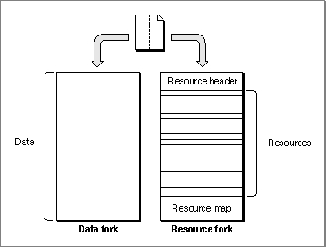
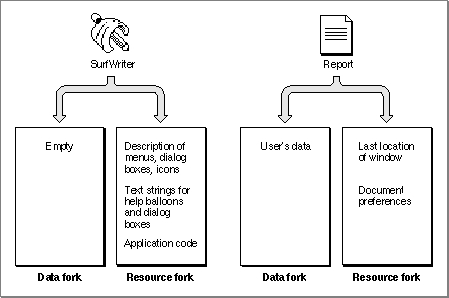

The Data Fork and the Resource Fork
In Macintosh system software, a file is a named, ordered sequence of bytes stored on a volume and divided into two forks, the data fork and the resource fork. The data fork usually contains data created by the user; the application creating the file can store and interpret the data in the data fork in whatever manner is appropriate. The resource fork of a file consists of a resource header, the resources themselves, and a resource map.Figure 1-1 shows the data fork and resource fork of a file.
Figure 1-1 The data fork and resource fork of a file

The resource header includes offsets to the beginning of the resource data and
to the resource map. The resource map includes information about the resources in the resource fork and offsets to the location of each resource.A Macintosh file always contains both a resource fork and a data fork, although one or both of those forks can be empty. The data fork of a document file typically contains data created by the user, and the resource fork contains any document-specific resources, such as preference settings and the document's last window position. The resource fork of an application file (that is, any file with the file type
'APPL') typically includes resources that describe the application's menus, windows, controls, dialog boxes, and icons, as well as the application's'CODE'resources. The resource fork of a file is also called a resource file, because in some respects you can treat it as if it were a separate file.When your application writes data to a file, it writes to either the file's resource fork or its data fork. Typically, you use File Manager routines to read from and write to a file's data fork and Resource Manager routines to read from and write to a file's resource fork.
- IMPORTANT
- You should store all language-dependent data of your application, such as text used in help balloons and dialog boxes, as resources. If you do this, you can begin to localize your application by editing your application's resources without recompiling the application code.

Whether you store data in the data fork or the resource fork of a document file depends largely on whether you can structure that data in a useful manner as a resource. For example, it's often convenient to store document-specific settings, such as the document's previous window size and location, as a resource in the document's resource fork. Data that the user is likely to edit is usually stored in the data fork of a document.
Figure 1-2 illustrates the typical contents of the data forks and resource forks of an application file and a document file.
- WARNING
- Don't use the resource fork of a file for data that is not in resource format. The Resource Manager assumes that any information in a resource fork can be interpreted according to the standard resource format described in this chapter.
Figure 1-2 An application's and a document's data fork and resource fork

A resource fork can contain at most 2727 resources. The Resource Manager uses a linear search when searching a resource fork's resource types and resource IDs. In general, you should not create more than 500 resources of the same type in any one resource fork.